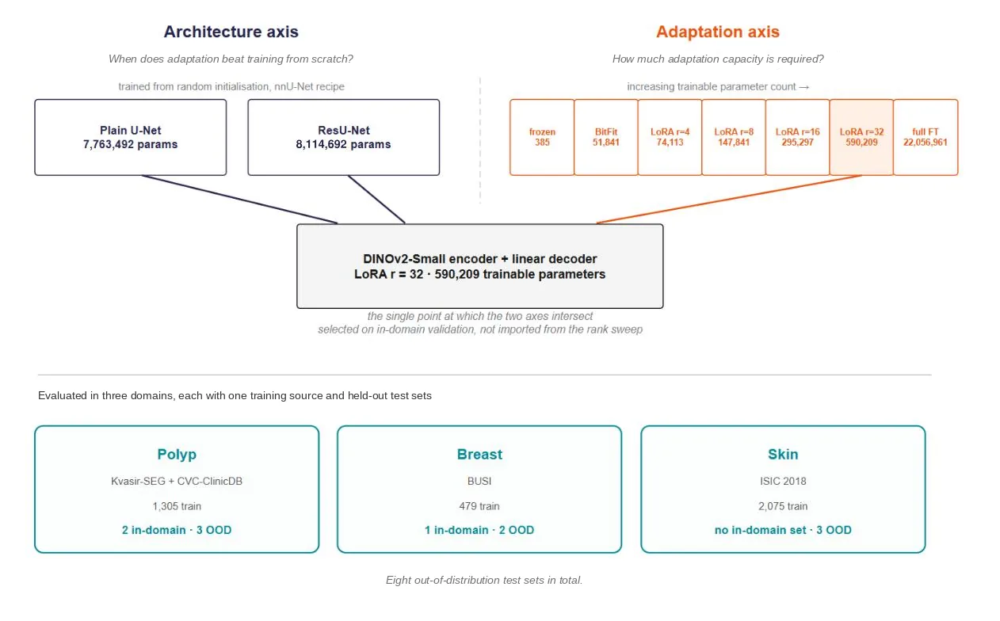
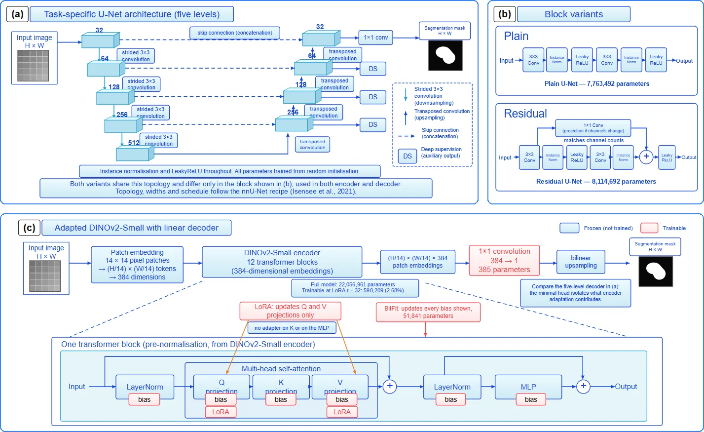
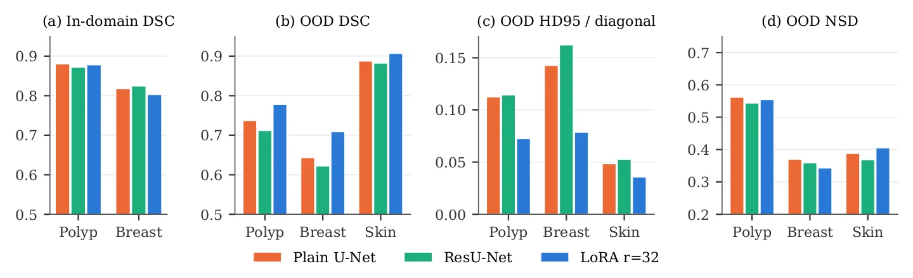
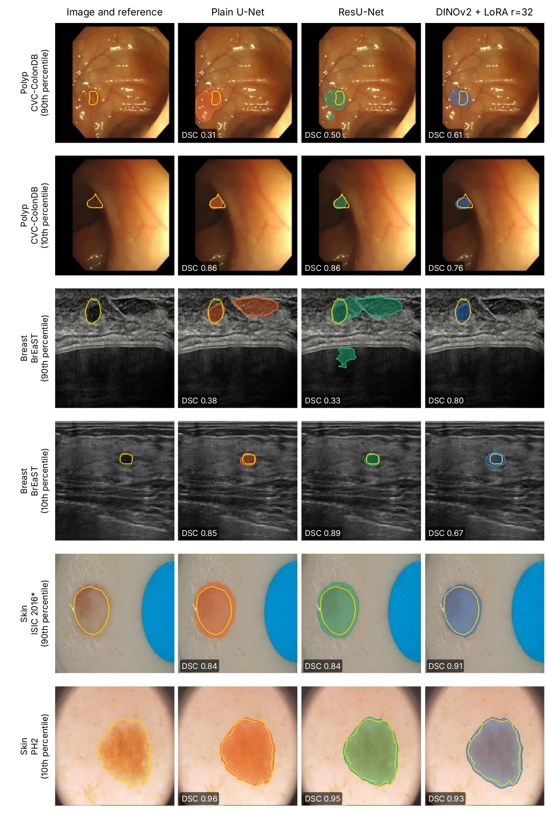

O Dilema da Generalização Clínica
A segmentação de imagens médicas enfrenta um obstáculo silencioso mas crítico: o desvio de distribuição (distribution shift). Modelos treinados em um hospital frequentemente falham quando implantados em outro, devido a diferenças em scanners, protocolos e populações de pacientes. Enquanto a literatura recente celebra os Foundation Models (modelos base) pré-treinados em grandes conjuntos de imagens naturais como a solução para esse problema, as evidências comparativas são frequentemente limitadas.
Estudos anteriores costumam comparar modelos adaptados contra uma única baseline específica de tarefa, muitas vezes mal configurada, e avaliá-los apenas dentro da distribuição de treinamento. Isso cria uma ilusão de superioridade que não se sustenta em cenários clínicos reais. O paper "Medical Image Segmentation: Foundation Model Adaptation versus Task-Specific Training" propõe corrigir essa lacuna com uma comparação controlada e honesta.
Desenhando a Comparação Justa
Os autores, da Brunel University of London, estruturam o experimento em dois eixos independentes. O primeiro eixo, "Arquitetura", compara um Foundation Model adaptado contra arquiteturas task-specific (U-Net e ResU-Net) treinadas do zero. O segundo eixo, "Adaptação", varia a quantidade de parâmetros ajustados no Foundation Model, desde o congelamento total até o fine-tuning completo.
O Foundation Model escolhido é o DINOv2-Small, um encoder genérico de visão computacional pré-treinado em imagens naturais, sem exposição prévia a dados médicos ou máscaras de segmentação. Isso é intencional: se um modelo genérico pequeno for suficiente, modelos maiores ou específicos seriam redundantes. Os comparadores são U-Nets clássicos e ResU-Nets, configurados sob o protocolo nnU-Net, garantindo que as baselines sejam competitivas com o estado da arte.

Metodologia: Domínios e Vazamento de Dados
O estudo abrange três domínios médicos: colonoscopia (pólipos), ultrassom de mama e dermoscopia de pele. Cada domínio possui uma fonte de treinamento e múltiplos conjuntos de teste externos (out-of-distribution, OOD). Uma descoberta metodológica crucial foi a detecção de vazamento de dados: um conjunto de teste popular (CVC-T) continha imagens idênticas a outro benchmark (CVC-ColonDB). Os autores relatam isso transparentemente e recalculam as métricas excluindo esse conjunto duplicado para evitar inflação artificial de performance.
Mecânica da Adaptação: LoRA e BitFit
Em vez de retreinar todo o DINOv2, os autores testam métodos de adaptação eficiente. O BitFit ajusta apenas os termos de viés (bias terms), enquanto o LoRA (Low-Rank Adaptation) adiciona matrizes de baixa rank às camadas de atenção. Isso permite explorar quanta capacidade é realmente necessária. A hipótese era que a quantidade de adaptação necessária dependeria do método ou do tamanho do dataset. Os resultados sugerem que a capacidade necessária é determinada pela complexidade do domínio de imagem, não pelo método de adaptação em si.

Resultados: Paridade In-Domain, Déficit OOD
Os resultados revelam uma dicotomia clara. Dentro da distribuição (in-domain), onde os dados de teste vêm da mesma fonte que o treinamento, não há vantagem significativa para o DINOv2 adaptado. O U-Net plano atinge um DSC (Dice Similarity Coefficient) de 0.8803, contra 0.8780 do DINOv2, uma diferença dentro da margem de erro de medição. Isso ocorre com um terço dos parâmetros e sem pré-treinamento. Se os dados de treinamento são abundantes e a distribuição é estável, o U-Net treinado do zero é suficiente e eficiente.

A Vantagem Real: Generalização Fora da Distribuição
A situação inverte-se completamente nos conjuntos de teste externos (OOD). Em todos os oito conjuntos OOD testados, o DINOv2 adaptado supera as versões task-specific. O ganho não é uniforme: varia de -0.008 a -0.107 em déficit de performance dos U-Nets. Isso confirma que o valor principal dos Foundation Models não é a precisão absoluta em dados conhecidos, mas a robustez a mudanças de domínio. A adaptação permite que o modelo generalize melhor para novas instituições e protocolos.
Eficiência da Adaptação
Um achado importante é que pouco ajuste é necessário. A transição de um encoder congelado para o ajuste apenas dos biases (BitFit) captura a maior parte do benefício disponível. Adicionar LoRA com rank 32 (cerca de 2.7% dos parâmetros) iguala ou supera o fine-tuning completo em métricas de sobreposição. No entanto, o LoRA mostrou menor precisão em algumas métricas, cobrindo mais área ao redor da lesão. Isso sugere que a adaptação eficiente é viável, mas requer seleção cuidadosa de métricas.

Limitações e Conclusões
O estudo tem limitações. A comparação de adaptação é baseada em um único backbone (DINOv2-Small), e resultados podem variar para modelos maiores ou específicos para medicina. Além disso, a ordem de performance in-domain não se transfere confiavelmente para OOD, indicando que validações internas não garantem sucesso clínico. Os autores concluem que a adaptação de Foundation Models é justificada quando a generalização entre instituições é crítica, mas que a capacidade de adaptação deve ser selecionada com base no domínio alvo, não no método.
O que fica
- Fora da distribuição (dados de novas instituições), a adaptação do DINOv2 supera consistentemente U-Nets treinados do zero.
- Dentro da distribuição (dados de treinamento), U-Nets competitivos alcançam desempenho equivalente com menos parâmetros.
- A adaptação eficiente (LoRA) captura a maioria dos benefícios, sem necessidade de fine-tuning completo.
- Modelos adaptados tendem a falhar em lesões pequenas e contornos finos comparados a arquiteturas específicas.
Paper original: Medical Image Segmentation: Foundation Model Adaptation versus Task-Specific Training
Comentários
Nenhum comentário ainda. Seja o primeiro.